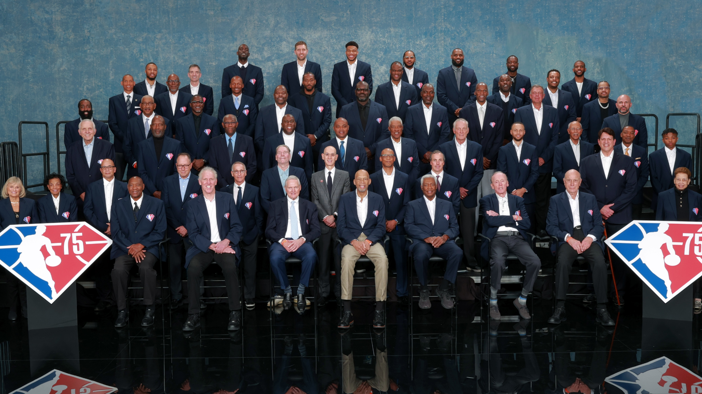
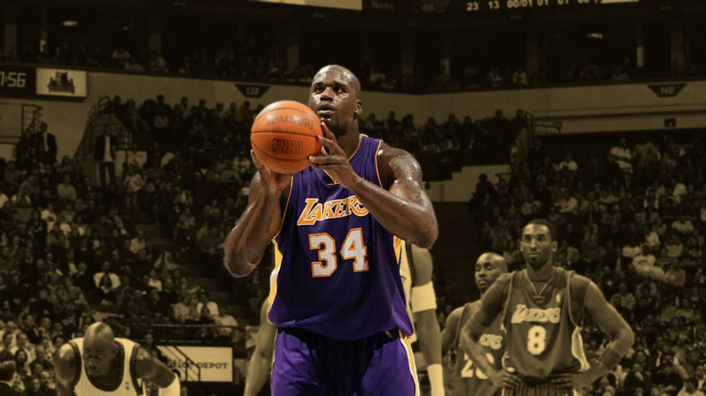
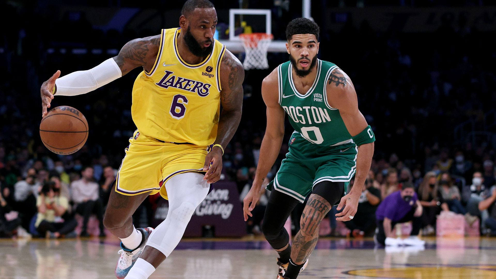
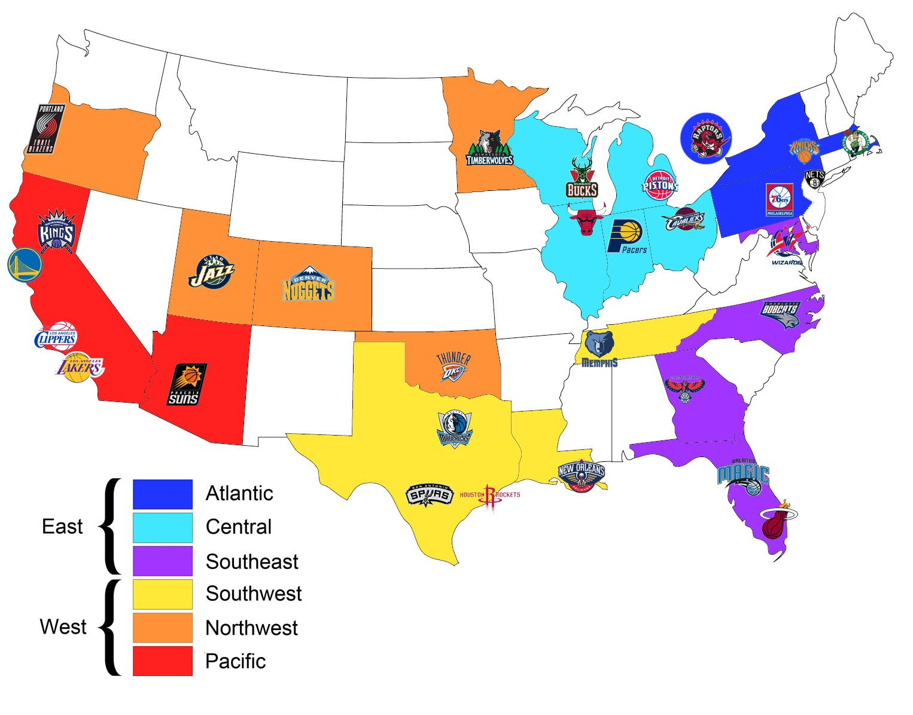
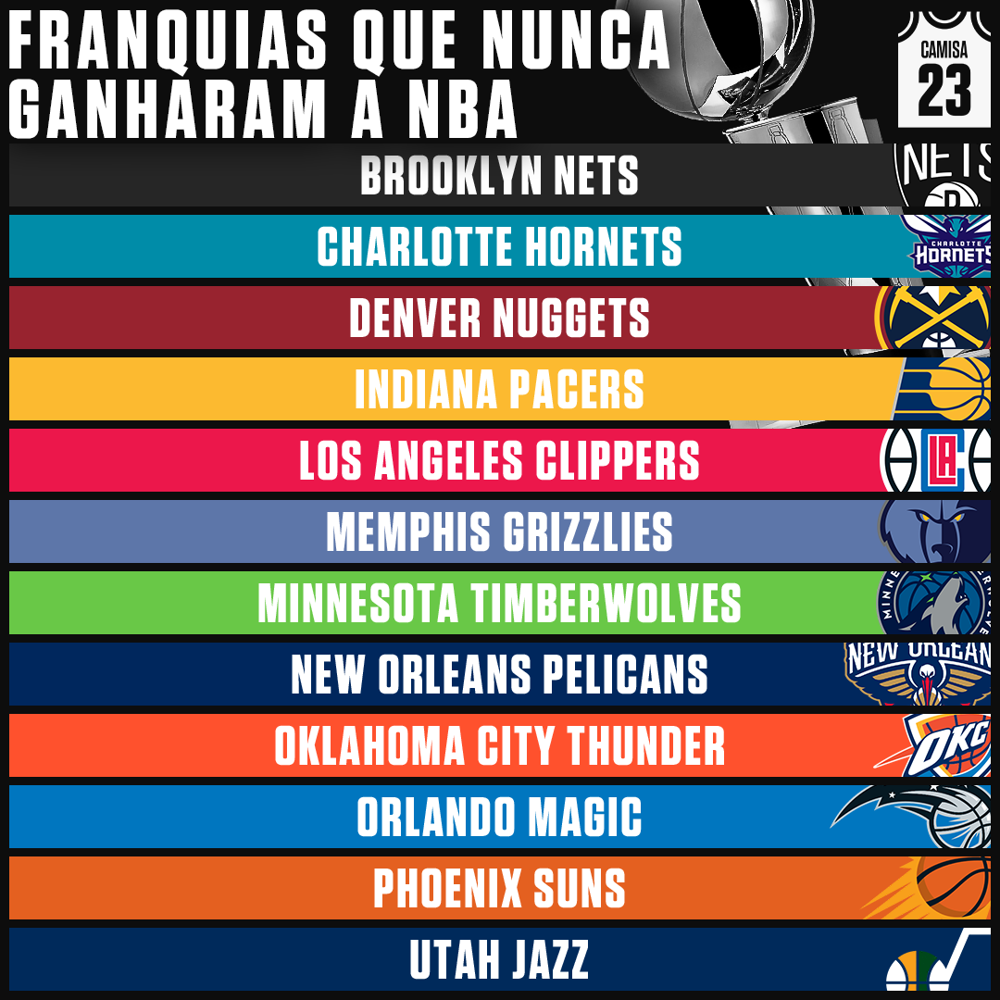

Uma liga que recentemente chegou aos seus 75 anos, durante todos os seus anos conta com diversos fatos curiosos.
Buscamos alguns fatos populares e interessantes sobre a maior liga de basquete do planeta, que voce talvez nao conheca.
Muggsy Bogues tem uma altura de 1,60m é ate hoje a menor pessoa a jogar na NBA. Sua jogada iconica acontece onde o mesmo passa por debaixo das pernas de um defensor utilizando o seu tamanho para ganhar vantagem.
O seu companheiro de equipe foi o grandissimo Manute Bol foi um dos maiores jogadores da historia, tinha
uma bola de três que era totalmente subestimada pelos adversarios.
Na época de 1987-1988, os dois jogaram pela mesma equipa no Washington Bullets.
O jogador mais dominante de toda a historia para muitos, Shaq que foi 15 vezes All-Start, e campeao 4 vezes. Dominava a quadra com todo seu tamanho e brutalidade, mas pecava quando o assunto era os lances livres e tiros de longa distancia.
O jogador tentou cerca de 18 arremessos de longa distancia, e teve o feito de acertar apenas 1, dentre os mais de 10 mil pontos, somente um de seus arremessos foi de tres pontos.
Uma liga com mais de 75 anos, com 30 times, e apenas 2 desses 30 times obtiveram mais de 10 titulos. Os multicampeoes sao o Boston Celtics, e o Los Angeles Lakers, cada um tem 17 titulos. Um fato extremamente incomum e que desses 17, o Boston Celtics conquistaram 8 titulos em sequencia dos anos de 1958/59 - 1965/66.
Os times que vem na cola desses 2 gigantes, sao grandiosso Chicago Bulls da lenda Michael Jordan, e o tao aclamado pelos novos fas, o Golden State Warriors, que contem 6 titulos cada.
Quando falamos da NBA temos que lembrar que diferente do nosso futebol, a liga e dividida entre Leste e Oeste. Para facilitar o deslocamento entre os times.
O lado mais vencedor e o lado oeste, contando com o gigante Lakers trazendo 17 tacas para o seu lado.
Atualmente a liga conta com 30 times, desses 30, um total de 12 times nunca levaram o titulo, o time mais antigo desse grupo e o Phoenix Suns que foi fundado em 1968 e chegou em 3 finais, mas nunca levantando o trofeu.
Junto com o Phoenix Suns temos a sombra de LA, os Clippers, alem de nunca terem levantado a taca, ate hoje nao conseguiram chegar a uma final de conferencia. Entretanto desde Blake Griffin, DeAndre Jordan, Paul George e Kawhi Leonard, o time ganhou certa notoriedade mas ainda vive na seca, e na sombra dos Lakers.
Dentre todas essa curiosidades, voce ja conhecia alguma?? Vou deixar uma ultima curiosidade pra você leitor do 2F2.
Michael Jordan é tido pela maioria como o melhor jogador de todos os tempos da NBA, mas você sabia que o seu tênis foi banido pela liga? Tudo aconteceu em seu primeiro ano utilizando o Air Jordan. Na época, a NBA determinava que os times da casa usariam tênis brancos, enquanto os visitantes ficavam com os pretos. Mas o primeiro Air Jordan era colorido e a liga baniu o instrumento de trabalho. No entanto, Jordan seguiu utilizando, pagando uma multa de US$5 mil a cada partida que usasse. A Nike bancou tudo e, posteriorente, foi liberado.